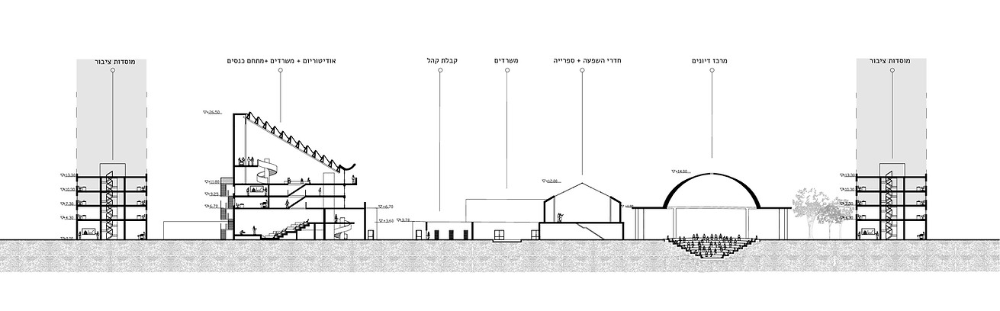
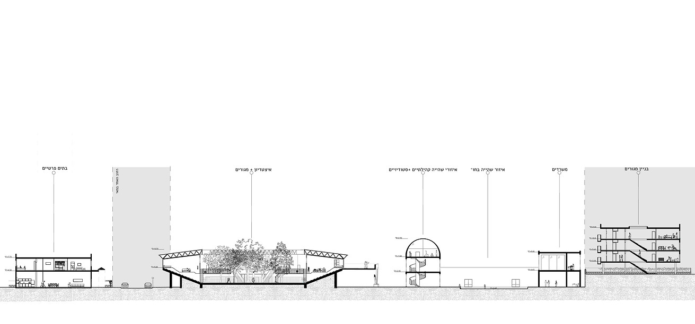
As part of our studio work, we explored the story of the Pachim Stadium, one of the first basketball arenas in Israel, located in Holon. This stadium holds profound historical significance, reflecting the political aspirations and social vision of the early years of the State of Israel. Through our research, we discovered that the structure, which served as a milestone in the development of local sports culture, is now slated for demolition. This raises an important discussion about balancing the preservation of historical heritage with the demands of modern urban renewal and development.
The stadium earned its name, "Pachim Stadium," due to its distinctive cladding made of tin, while its base was constructed from concrete. Initially designed as an open-air venue, the stadium underwent significant changes over the years, eventually being enclosed to form a fully covered structure. The combination of its modest materials and architectural evolution highlights its unique character and serves as a testament to the cultural and planning transformations that have shaped Israel over time.
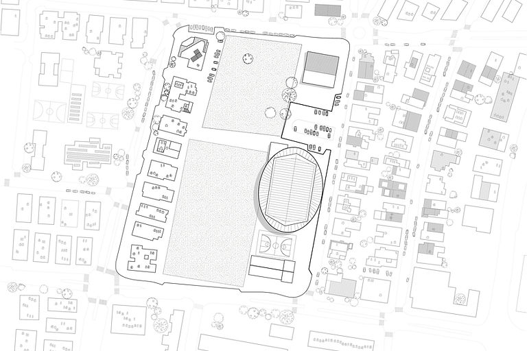
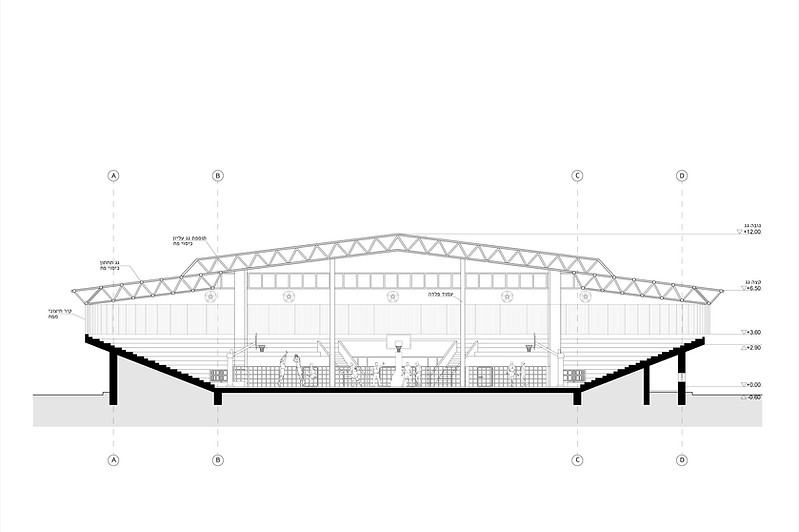
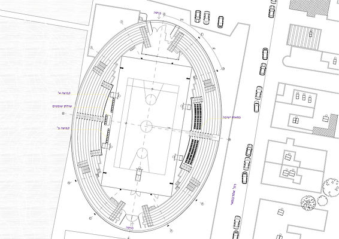
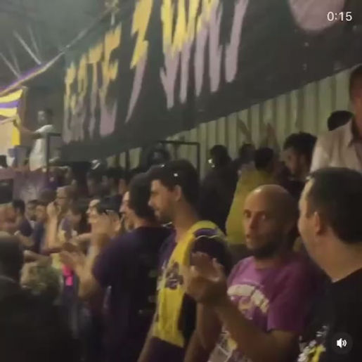
What makes the stadium particularly unique is its location. Unlike most stadiums, which are typically situated on the outskirts of a city to minimize noise and manage the influx of crowds, Pachim Stadium is located within a residential neighborhood, surrounded by family homes. This unconventional placement adds a distinctive layer to its character, blending the dynamics of a bustling sports venue with the everyday life of a community setting.
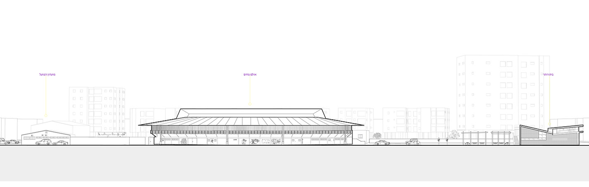
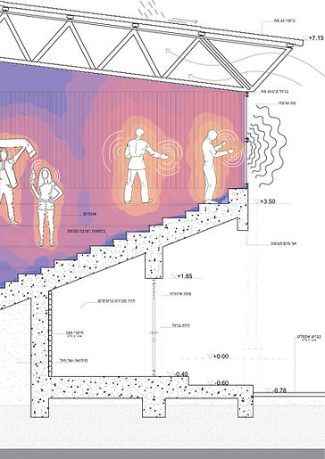
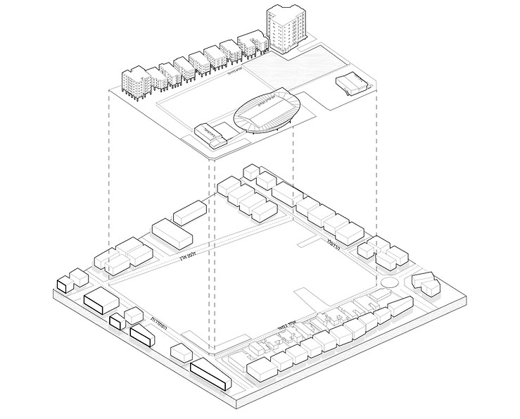
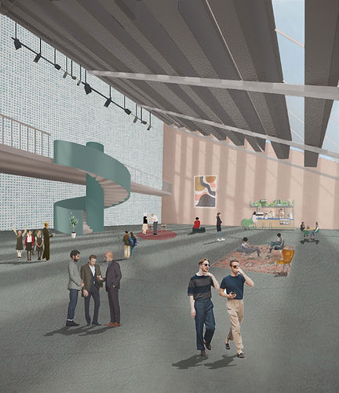
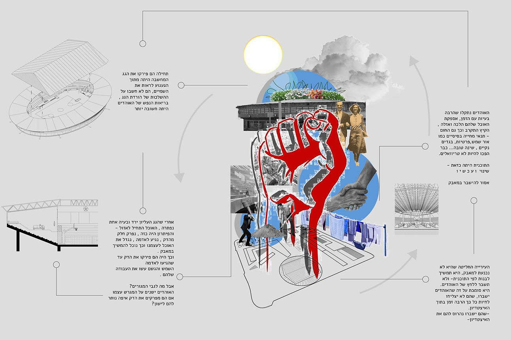
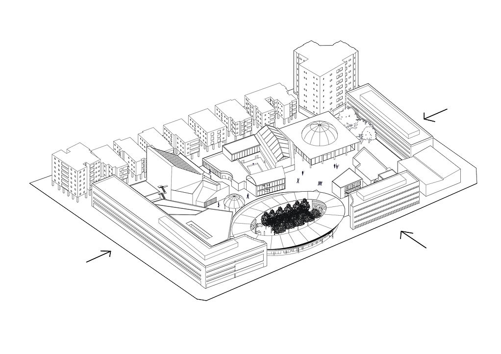
During the planning phase, the instructor introduced a unique approach to the design process. The task was to envision a dystopia—a chaotic scenario that could potentially occur and impact the site in various ways. By immersing ourselves in this speculative framework, we were able to deeply analyze the site's vulnerabilities and opportunities, ultimately gaining a clearer understanding of what actions should be taken to address the complex dynamics of the space we were working with.
Following the dystopian scenario, the decision was made to transform the entire stadium complex into a "Civic City Hall," a concept inspired by ancient Greece but adapted to a modern civic context. The vision centered on creating a hub for residents, offering community activities, workshops, and spaces dedicated to fostering social engagement.
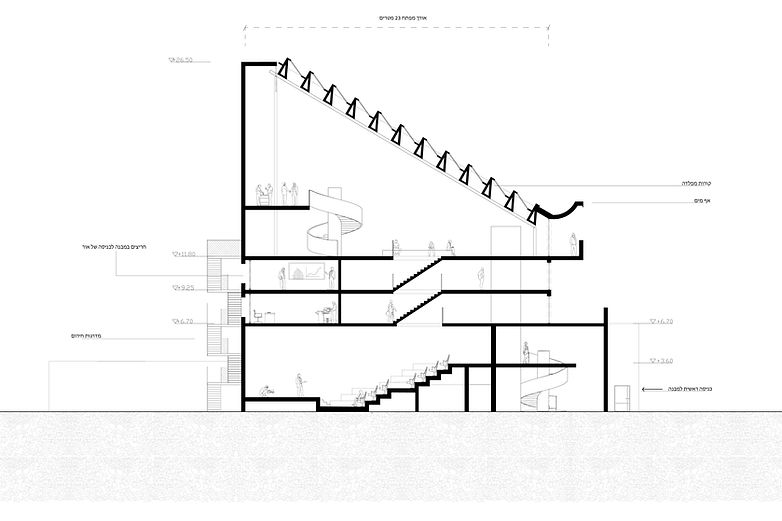
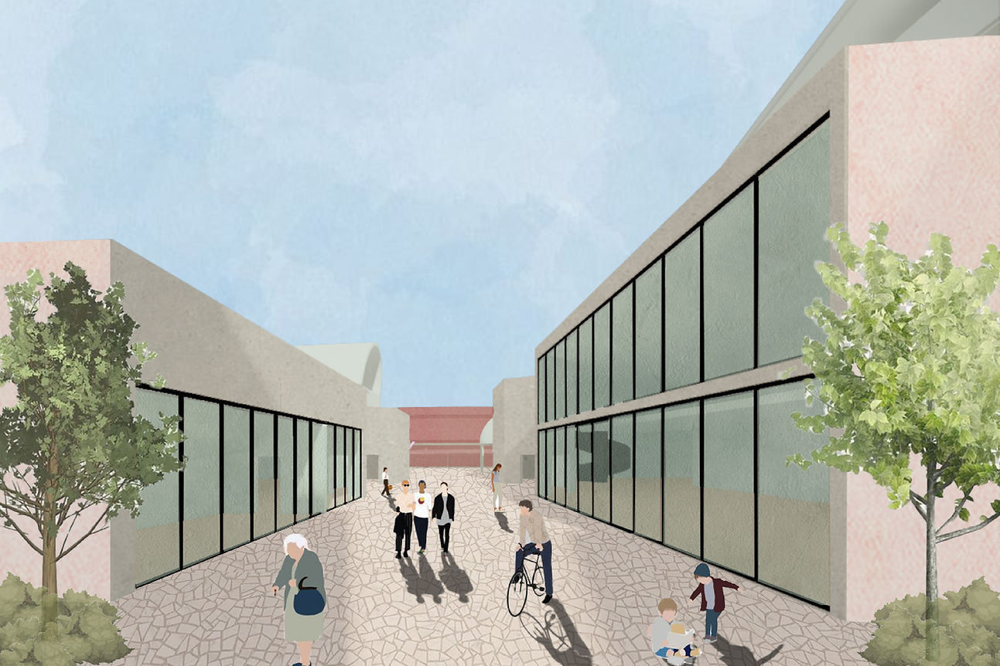